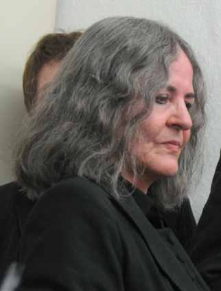

Margarete Dreher Werkauswahl Biografie Bibliografie Kontakt

Margarete Drehergeb. in Calw / Baden-Württemberg, lebt in Berlin
1965-69 Studium der Malerei an der Staatlichen Kunstakademie Karlsruhe
1968 Förderpreis der Kunstakademie Karlsruhe
1969-72 Studium an der Hochschule für bildende Künste Berlin
1972 Meisterschülerin
1970 Heirat mit Anselm Dreher
1978 Weltreise (Sowjetunion, Japan, China, Südostasien, USA)
1988 2.Preis Wettbewerb Gedenkstätte Güterbahnhof Berlin-Grunewald
1991 Arbeitsstipendium Senator für kulturelle Angelegenheiten, Berlin
1992/93 Mitarbeit Ausstellungsprojekt "Erzählen", Akademie der Künste Berlin
1996 Projektförderung Senator für kulturelle Angelegenheiten, Berlin
1998 Beginn literarischer Arbeit
Einzelausstellungen & Beteiligungen
(Auswahl)1968 Künstlerbund Baden-Württemberg (K)
1972 Frühjahrsausstellung Kunstverein Hannover (K)
1981 Die nützlichen Künste - Gestaltende Technik und Bildende Kunst
seit der Industriellen Revolution, Messehallen Berlin (K)1982 Kunst und Technik, Museum für Verkehr und Technik, Berlin
1983 Deutscher Künstlerbund, Martin-Gropius-Bau, Berlin (K)
1983-92 Art Cologne Köln
1985 Die Rationale - Rationale Konzepte von Künstlerinnen 1915-1985,
Frauenmuseum, Bonn (K)1986 Galerie Anselm Dreher, Berlin (E)
1988 Galerie Brigitte March, Stuttgart (E)
1988 Gedenken und Denkmal, Berlinische Galerie, Berlin (K)
1990 Neuer Berliner Kunstverein (E,K)
1991 Wilhelm-Hack-Museum Ludwigshafen (E,K)
1991/92 Interferenzen - Kunst aus Westberlin 1960-1990,
Riga / St.Petersburg (K)1992 eikon - das Bild, Stiftung für konkrete Kunst Reutlingen (K)
1992 Im ganzen Haus, Berlinische Galerie, Martin-Gropius-Bau, Berlin
1992 37 Räume, KUNSTWERKE e.V., Berlin Mitte
1992 Profession ohne Tradition, Martin-Gropius-Bau, Berlin (K)
1992 Kunst und Norm, Deutsches Institut für Normung, Berlin (K)
1993 Galerie Anselm Dreher, Berlin (E)
1994 Multiple, Neuer Berliner Kunstverein
1994 Erzählen, Akademie der Künste, Berlin / Kunsthalle Malmö (K)
1996 Die konkrete Zeit, Stiftung für konkrete Kunst Reutlingen (K)
1996 Noch nie gesehen, Sammlung Berlinische Galerie
1996 Mies van der Rohe Haus Berlin (E,K)
1996-2002 Art Forum Berlin
2000 Galerie Anselm Dreher, Berlin (E)
2002 cross female, Künstlerhaus Bethanien, Berlin (K)
2002 step 2, CCNOA, Brüssel
2002 Von der Dürerzeit zur Postmoderne, Kupferstichkabinett Berlin (K)
2004 Galerie Anselm Dreher, Berlin (E)
2006 Flic Flac, Berlinische Galerie, Berlin
2008 Neuordnung Sammlung Berlinische Galerie, Berlin
2009 Kunst und Öffentlichkeit, Neuer Berliner Kunstverein (K)2009/10 Zeigen - eine Audiotour von Karin Sander, Temporäre Kunst-
halle, Berlin (K)2012 Aufbruch Realismus, Städtische Museen Heilbronn (K)
2013 Das Glück des Sammelns, Kunsthaus Potsdam e.V.
2013 Umbruch - Module im Wandel, Stiftung für konkrete Kunst Reutlingen
Erwerbungen öffentlicher SammlungenSammlung der Bundesrepublik Deutschland
Wilhelm-Hack-Museum Ludwigshafen
Stiftung für konkrete Kunst Reutlingen
Regierungspräsidium Stuttgart
Sammlung Deutsche Bank, Frankfurt am Main
Neuer Berliner Kunstverein, Artothek & Videoforum
Berlinische Galerie, Landesmuseum für Moderne Kunst
Kupferstichkabinett SMPK, Berlin
Wettbewerbe Kunst-am-Bau & Kunst-im-Stadtraum
(Auswahl)1988 Gedenkstätte Güterbahnhof Berlin-Grunewald (2.Preis)
1988 Gedenkstätte Börneplatz Frankfurt am Main
1989 Gedenkstätte KZ-Aussenlager Berlin-Sonnenallee (eingeladen)
1991 Mahnen und Gedenken im Bayerischen Viertel, Berlin
1993 Kunst im Neuen Abgeordnetenhaus von Berlin / Festsaal (eingeladen)
1994 Zentrales Mahnmal für die ermordeten Juden Europas
1997 Memorial de Goreé / Dakar (mit Metropolis-Architekten)
1998 Faserstoffprojekt Ravensbrück/Fürstenberg (eingeladen)
1998 Kunst und Bauen Campus Universität Cottbus
2002 Stadtbibliothek Calw / Aussenfassade (Auftragsarbeit)
2003 Campus Humboldt Universität Berlin-Adlershof (eingeladen)
2004 Berufsakademie Ravensburg/Aussenfassade (eingeladen)
2005 Verwaltungsgebäude DaimlerChrysler, Werk Wöhr (eingeladen)
2010 Denkzeichen Georg Elser